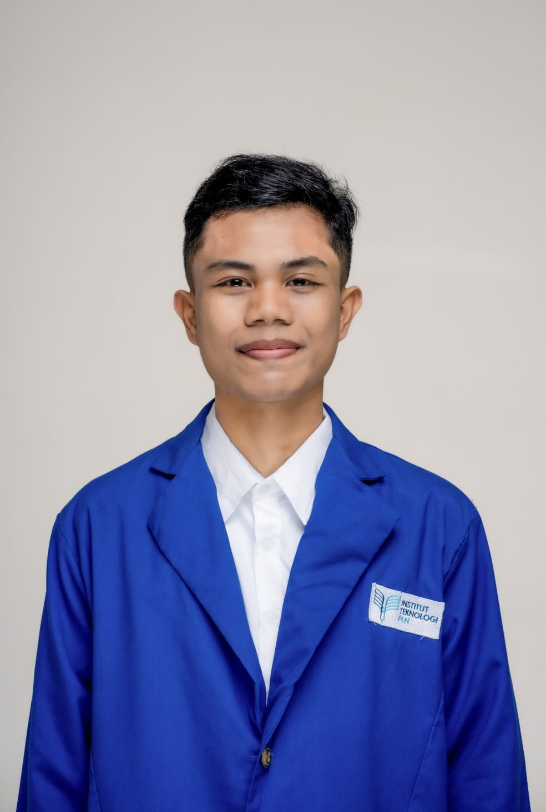

Ananda Rizky Maha Putra
Informatics Engineering Student | Data Analyst & Tech Enthusiast | Communicator
About Me
Second-year Informatics Engineering student at PLN Institute of Technology with a GPA of 3.95. Focused on data analysis and technology development, as well as actively leading various community organizations. Experienced in administrative data management, report preparation, and coordinating cross-agency work programs attentively and responsibly.
Education
Bachelor of Informatics Engineering
2025 – Present
PLN Institute of Technology (IT-PLN) • GPA: 3.95/4.00
Natural Sciences (MIPA)
2022 – 2025
Public Senior High School 1 Bone (SMAN 1 Bone) • Grade: 94.90
Organizational Experience
Chairperson of Bone Regency Child Forum
May 2024 – July 2025
Bone Regency
- Coordinated the implementation of organizational work programs in accordance with the direction of the Department of Women's Empowerment and Child Protection (DP3A).
- Led the planning and execution of activities as a platform for child participation and aspiration channeling at the regency level.
- Served as an audience representative and bridge for children's aspirations to the local government through deliberation forums.
Regional Network of South Sulawesi Child Forum
July 2024 – July 2025
South Sulawesi Province
- Managed communication channels and information dissemination from the Provincial Child Forum to Regency Child Forums.
- Gathered aspirations from children across regencies/cities to be forwarded to the national level.
President of Student Representative Council (MPK)
September 2023 – August 2024
SMAN 1 Bone
- Chaired meetings and managed MPK operations in compliance with organizational bylaws, regulations, and school work plans.
- Monitored, supervised, and evaluated the implementation of Student Council (OSIS) activities and school facilities.
Achievements
- 2nd Place in German Landeskunde Olympiad across South & Southeast Sulawesi (October 2024)
- 5th Place in Arithmetic Olympiad by UIN Alauddin Makassar (September 2023)
- Child Ambassador of Bone Regency (2023)
Skills
- Technical & Data Analysis: Microsoft Office (Word, Excel, PowerPoint), Data Analysis, Administration
- Interpersonal: Leadership, Public Speaking, Teamwork, Problem Solving
Certifications & Training
- FGD Adolescent Statistical Profile (UNICEF Indonesia, 2025)
- Youth Facilitator Training OCSEA & Mental Health (BAKTI x UNICEF, 2025)
- Certificate Leader of Bone Child Forum (2024–2025)